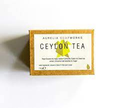
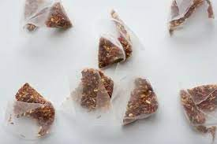
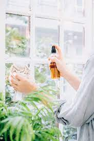

Tea Soap
Tea-based soap is becoming more and more well-liked worldwide. It is
given as a present to friends and family in lovely baskets that are
admired for their aesthetic appeal and health advantages. These
soaps are typically made by hand, cured for at least a month, and
made utilizing the cold process method. Lavender soap, chamomile
soap, and green tea soap are a few of the more well-known varieties.
Buy Now

Potpurri/Aromatic Tea Satchet
A collection of naturally flavored dried herbs and flowers is called
potpourri. To give a room a revitalizing smell, it is frequently put
in a bowl or tied in a little sachet. Tea leaves are used to make
potpourri with fragrant herbs and spices that have a lovely scent.
These come in attractive packaging and might make guests feel more
at home when they visit.
Buy Now

Tea as a Household Cleaner
While tea is not specifically marketed as a luxury good when used as
a household cleaning, it can add shine to your pricey furnishings.
It works wonders to sprinkle dry green tea on your carpets and rugs
for 10 minutes before vacuuming them up. Wooden floors can benefit
from being polished with brewed tea. Additionally, you may add a
beautiful shimmer to a mirror or window by just rubbing a used
teabag against them.
Buy Now
